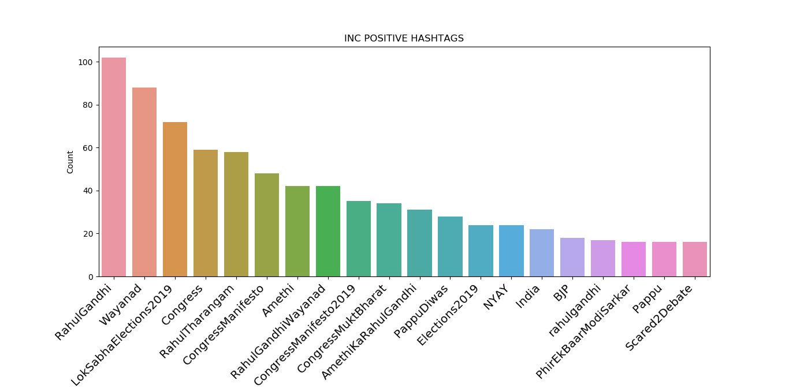
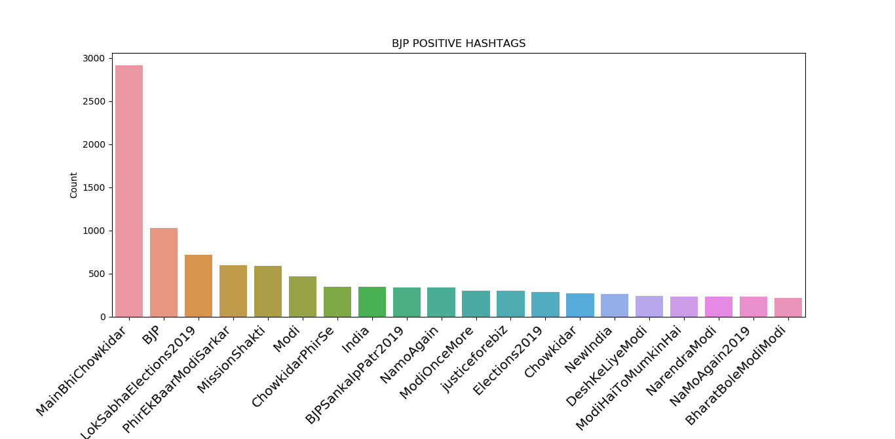

2019 Lok Sabha Elections, Karnataka — Predictions:
| Constituency | Actual Winner | Predicted Winner |
|---|---|---|
| Bagalkot | Gaddigoudar Parvatagouda Chandanagouda - BJP | Gaddigoudar Parvatagouda Chandanagouda - BJP |
| Bangalore Central | P. C. Mohan - BJP | P. C. Mohan - BJP |
| Bangalore North | D. V. Sadananda Gowda - BJP | D. V. Sadananda Gowda - BJP |
| Bangalore Rural | D. K. Suresh - INC | D. K. Suresh - INC |
| Bangalore South | Tejasvi Surya - BJP | Tejasvi Surya - BJP |
| Belgaum | Angadi Suresh Channabasappa - BJP | Dr. Sadhunavar - INC |
| Bellary | Y. Devendrappa - BJP | Y. Devendrappa - BJP |
| Bidar | Bhagwanth Khuba - BJP | Bhagwanth Khuba - BJP |
| Bijapur | Jigajinagi Ramesh Chandappa - BJP | Jigajinagi Ramesh Chandappa - BJP |
| Chamarajanagar | V. Srinivas Prasad - BJP | V. Srinivas Prasad - BJP |
| Chikkballapur | B. N. Bache Gowda - BJP | B. N. Bache Gowda - BJP |
| Chikkodi | Annasaheb Shankar Jolle - BJP | Annasaheb Shankar Jolle - BJP |
| Chitradurga | G. M. Siddeshwar - BJP | G. M. Siddeshwar - BJP |
| Dakshina Kannada | Nalin Kumar Kateel - BJP | Nalin Kumar Kateel - BJP |
| Davanagere | A. Narayanaswami - BJP | A. Narayanaswami - BJP |
| Dharwad | Pralhad Joshi - BJP | Vinay Kulkarni - INC |
| Gulbarga | Dr. Umesh Yadhav - BJP | Dr. Umesh Yadhav - BJP |
| Hassan | Prajwal Revanna - JD(S) | Prajwal Revanna - JD(S) |
| Haveri | Udasi S. C. - BJP | Udasi S. C. - BJP |
| Kolar | S. Muniswamy - BJP | S. Muniswamy - BJP |
| Koppal | Karadi Sanganna Amarappa - BJP | Karadi Sanganna Amarappa - BJP |
| Mandya | Sumalatha Ambareesh - Independent | Sumalatha Ambareesh - Independent |
| Mysore | Prathap Simha - BJP | Prathap Simha - BJP |
| Raichur | Raja Amareshwara Naik - BJP | Raja Amareshwara Naik - BJP |
| Shimoga | B. Y. Raghavendra - BJP | S. Madhubangarappa - INC |
| Tumkur | G. S. Basavaraj - BJP | G. S. Basavaraj - BJP |
| Udupi Chikmagalur | Shobha Karandlaje - BJP | Shobha Karandlaje - BJP |
| Uttara Kannada | Anant Kumar Hegde - BJP | Anant Kumar Hegde - BJP |
Some Other Insights:
Positive Wordcloud Indian National Congress

Negative Wordcloud Indian National Congress

Positive Wordcloud Bharatiya Janata Party

Negative Wordcloud Bharatiya Janata Party

Positive Hashtags Indian National Congress

Negative Hashtags Indian National Congress
Positive Hashtags Bharatiya Janata Party

Negative Hashtags Bharatiya Janata Party